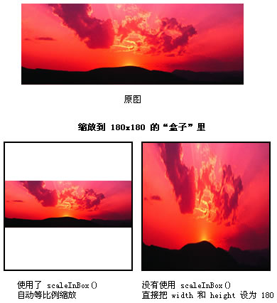

| Package | com.riaoo.adjustDisplayObject.transformer |
| Class | public class DisplayObjectTransformer |
| Inheritance | DisplayObjectTransformer |
| Method | Defined By | ||
|---|---|---|---|
构造函数
本类所有方法均为静态方法，不应创建实例。
| DisplayObjectTransformer | ||
alignBottomEdge(targets:Array):void [static]
底对齐给定的显示对象，所有显示对象将向最下边的显示对象靠拢。需要进行底对齐操作的显示对象将包含在 targets 参数里。
| DisplayObjectTransformer | ||
alignHorizonalCenter(targets:Array):void [static]
水平中对齐给定的显示对象，所有显示对象将向最左边的显示对象的左边缘与最右边的显示对象的右边缘之间的水平中线靠拢。需要进行水平中对齐操作的显示对象将包含在 targets 参数里。
| DisplayObjectTransformer | ||
alignLeftEdge(targets:Array):void [static]
左对齐给定的显示对象，所有显示对象将向最左边的显示对象靠拢。需要进行左对齐操作的显示对象将包含在 targets 参数里。
| DisplayObjectTransformer | ||
alignRightEdge(targets:Array):void [static]
右对齐给定的显示对象，所有显示对象将向最右边的显示对象靠拢。需要进行右对齐操作的显示对象将包含在 targets 参数里。
| DisplayObjectTransformer | ||
alignTopEdge(targets:Array):void [static]
上对齐给定的显示对象，所有显示对象将向最上边的显示对象靠拢。需要进行上对齐操作的显示对象将包含在 targets 参数里。
| DisplayObjectTransformer | ||
alignVerticalCenter(targets:Array):void [static]
垂直中对齐给定的显示对象，所有显示对象将向最上边的显示对象的上边缘与最下边的显示对象的下边缘之间的垂直中线靠拢。需要进行垂直中对齐操作的显示对象将包含在 targets 参数里。
| DisplayObjectTransformer | ||
cutOutRect(target:DisplayObject, width:Number, height:Number, distanceX:Number, distanceY:Number, transparent:Boolean = true, fillColor:uint = 0x00000000):BitmapData [static]
裁剪指定矩形区域并返回一个包含结果的 BitmapData 对象。
| DisplayObjectTransformer | ||
cutOutSuper(target:DisplayObject, template:DisplayObject, isAnti:Boolean = false):BitmapData [static]
超级裁剪工具！可裁剪任意形状！给定一个裁剪目标和一个模板，就可根据模板裁剪出形状相配的 BitmapData 数据。
| DisplayObjectTransformer | ||
distributeBottomEdge(targets:Array):void [static]
底部分布。以显示对象下边缘为准，在最上边与最下边的显示对象之间平均分布所有显示对象。需要进行底部分布操作的显示对象将包含在 targets 参数里。
| DisplayObjectTransformer | ||
distributeHorizonalCenter(targets:Array):void [static]
水平居中分布。以显示对象的中垂线为准，在最左边与最右边的显示对象之间平均分布所有显示对象。需要进行水平居中分布操作的显示对象将包含在 targets 参数里。
| DisplayObjectTransformer | ||
distributeLeftEdge(targets:Array):void [static]
左侧分布。以显示对象左边缘为准，在最左边与最右边的显示对象之间平均分布所有显示对象。需要进行左侧分布操作的显示对象将包含在 targets 参数里。
| DisplayObjectTransformer | ||
distributeRightEdge(targets:Array):void [static]
右侧分布。以显示对象右边缘为准，在最左边与最右边的显示对象之间平均分布所有显示对象。需要进行右侧分布操作的显示对象将包含在 targets 参数里。
| DisplayObjectTransformer | ||
distributeTopEdge(targets:Array):void [static]
顶部分布。以显示对象上边缘为准，在最上边与最下边的显示对象之间平均分布所有显示对象。需要进行顶部分布操作的显示对象将包含在 targets 参数里。
| DisplayObjectTransformer | ||
distributeVerticalCenter(targets:Array):void [static]
垂直居中分布。以显示对象的垂直中横线为准，在最上边与最下边的显示对象之间平均分布所有显示对象。需要进行垂直居中分布操作的显示对象将包含在 targets 参数里。
| DisplayObjectTransformer | ||
rotateAroundExternalPoint(target:DisplayObject, x:Number, y:Number, angleDegrees:Number):void [static]
令显示对象围绕其父级中的变形点进行旋转，旋转角度由 angleDegress 参数指定。
| DisplayObjectTransformer | ||
rotateAroundInternalPoint(target:DisplayObject, x:Number, y:Number, angleDegrees:Number):void [static]
令显示对象围绕其内部的变形点进行旋转，旋转角度由 angleDegress 参数指定。
| DisplayObjectTransformer | ||
scale9(target:Bitmap, newWidth:Number, newHeight:Number, scale9Grid:Rectangle = null):BitmapData [static]
对点阵图进行九切片缩放。假如未指定 scale9Grid 参数，将采用 Bitmap.scale9Grid 的值来进行缩放. | DisplayObjectTransformer | ||
scaleInBox(target:DisplayObject, boxWidth:Number, boxHeight:Number):void [static]
等比缩放。保持原有宽高比，对显示对象进行缩放. | DisplayObjectTransformer | ||
scaleX(target:DisplayObject, newWidth:Number, scaleAxis:String):void [static]
对显示对象进行水平缩放，缩放后的新宽度由 newWidth 指定。
| DisplayObjectTransformer | ||
scaleY(target:DisplayObject, newHeight:Number, scaleAxis:String):void [static]
对显示对象进行垂直缩放，缩放后的新高度由 newHeight 指定。
| DisplayObjectTransformer | ||
skewX(target:DisplayObject, skewX:Number):void [static]
对显示对象进行水平倾斜，倾斜的角度由 skewX 指定。
| DisplayObjectTransformer | ||
skewY(target:DisplayObject, skewY:Number):void [static]
对显示对象进行垂直倾斜，倾斜的角度由 skewY 指定。
| DisplayObjectTransformer | ||
| Constant | Defined By | ||
|---|---|---|---|
| SCALE_AXIS_BOTTOM : String = bottom [static]
垂直缩放时，定轴为下边缘。
| DisplayObjectTransformer | ||
| SCALE_AXIS_HORIZONAL_CENTER : String = horizonalCenter [static]
水平缩放时，定轴为水平中心轴。
| DisplayObjectTransformer | ||
| SCALE_AXIS_LEFT : String = left [static]
水平缩放时，定轴为左边缘。
| DisplayObjectTransformer | ||
| SCALE_AXIS_RIGHT : String = right [static]
水平缩放时，定轴为右边缘。
| DisplayObjectTransformer | ||
| SCALE_AXIS_TOP : String = top [static]
垂直缩放时，定轴为上边缘。
| DisplayObjectTransformer | ||
| SCALE_AXIS_VERTICAL_CENTER : String = verticalCenter [static]
垂直缩放时，定轴为垂直中心轴。
| DisplayObjectTransformer | ||
| DisplayObjectTransformer | () | Constructor |
public function DisplayObjectTransformer()构造函数
本类所有方法均为静态方法，不应创建实例。
| alignBottomEdge | () | method |
public static function alignBottomEdge(targets:Array):void底对齐给定的显示对象，所有显示对象将向最下边的显示对象靠拢。需要进行底对齐操作的显示对象将包含在 targets 参数里。
Parameters
targets:Array — 包含若干个显示对象的数组。
|
| alignHorizonalCenter | () | method |
public static function alignHorizonalCenter(targets:Array):void水平中对齐给定的显示对象，所有显示对象将向最左边的显示对象的左边缘与最右边的显示对象的右边缘之间的水平中线靠拢。需要进行水平中对齐操作的显示对象将包含在 targets 参数里。
Parameters
targets:Array — 包含若干个显示对象的数组。
|
| alignLeftEdge | () | method |
public static function alignLeftEdge(targets:Array):void左对齐给定的显示对象，所有显示对象将向最左边的显示对象靠拢。需要进行左对齐操作的显示对象将包含在 targets 参数里。
Parameters
targets:Array — 包含若干个显示对象的数组。
|
| alignRightEdge | () | method |
public static function alignRightEdge(targets:Array):void右对齐给定的显示对象，所有显示对象将向最右边的显示对象靠拢。需要进行右对齐操作的显示对象将包含在 targets 参数里。
Parameters
targets:Array — 包含若干个显示对象的数组。
|
| alignTopEdge | () | method |
public static function alignTopEdge(targets:Array):void上对齐给定的显示对象，所有显示对象将向最上边的显示对象靠拢。需要进行上对齐操作的显示对象将包含在 targets 参数里。
Parameters
targets:Array — 包含若干个显示对象的数组。
|
| alignVerticalCenter | () | method |
public static function alignVerticalCenter(targets:Array):void垂直中对齐给定的显示对象，所有显示对象将向最上边的显示对象的上边缘与最下边的显示对象的下边缘之间的垂直中线靠拢。需要进行垂直中对齐操作的显示对象将包含在 targets 参数里。
Parameters
targets:Array — 包含若干个显示对象的数组。
|
| cutOutRect | () | method |
public static function cutOutRect(target:DisplayObject, width:Number, height:Number, distanceX:Number, distanceY:Number, transparent:Boolean = true, fillColor:uint = 0x00000000):BitmapData裁剪指定矩形区域并返回一个包含结果的 BitmapData 对象。
Parameters
target:DisplayObject — 需要裁剪的显示对象。
| |
width:Number — 位图图像的宽度，以像素为单位。
| |
height:Number — 位图图像的高度，以像素为单位。
| |
distanceX:Number — 切割矩形左上角的点到显示对象矩形左上角的点的水平距离。注意：左上角的点不一定就是注册点（0, 0）外，变形过的显示对象就是一个例外。
| |
distanceY:Number — 切割矩形左上角的点到显示对象矩形左上角的点的垂直距离。注意：左上角的点不一定就是注册点（0, 0）外，变形过的显示对象就是一个例外。
| |
transparent:Boolean (default = true) | |
fillColor:uint (default = 0x00000000) |
BitmapData |
| cutOutSuper | () | method |
public static function cutOutSuper(target:DisplayObject, template:DisplayObject, isAnti:Boolean = false):BitmapData超级裁剪工具！可裁剪任意形状！给定一个裁剪目标和一个模板，就可根据模板裁剪出形状相配的 BitmapData 数据。
Parameters
target:DisplayObject — 需要裁剪的显示对象。
| |
template:DisplayObject — 裁剪模板，可以是任意形状。
| |
isAnti:Boolean (default = false) |
BitmapData |
| distributeBottomEdge | () | method |
public static function distributeBottomEdge(targets:Array):void底部分布。以显示对象下边缘为准，在最上边与最下边的显示对象之间平均分布所有显示对象。需要进行底部分布操作的显示对象将包含在 targets 参数里。
Parameters
targets:Array — 包含若干个显示对象的数组。
|
| distributeHorizonalCenter | () | method |
public static function distributeHorizonalCenter(targets:Array):void水平居中分布。以显示对象的中垂线为准，在最左边与最右边的显示对象之间平均分布所有显示对象。需要进行水平居中分布操作的显示对象将包含在 targets 参数里。
Parameters
targets:Array — 包含若干个显示对象的数组。
|
| distributeLeftEdge | () | method |
public static function distributeLeftEdge(targets:Array):void左侧分布。以显示对象左边缘为准，在最左边与最右边的显示对象之间平均分布所有显示对象。需要进行左侧分布操作的显示对象将包含在 targets 参数里。
Parameters
targets:Array — 包含若干个显示对象的数组。
|
| distributeRightEdge | () | method |
public static function distributeRightEdge(targets:Array):void右侧分布。以显示对象右边缘为准，在最左边与最右边的显示对象之间平均分布所有显示对象。需要进行右侧分布操作的显示对象将包含在 targets 参数里。
Parameters
targets:Array — 包含若干个显示对象的数组。
|
| distributeTopEdge | () | method |
public static function distributeTopEdge(targets:Array):void顶部分布。以显示对象上边缘为准，在最上边与最下边的显示对象之间平均分布所有显示对象。需要进行顶部分布操作的显示对象将包含在 targets 参数里。
Parameters
targets:Array — 包含若干个显示对象的数组。
|
| distributeVerticalCenter | () | method |
public static function distributeVerticalCenter(targets:Array):void垂直居中分布。以显示对象的垂直中横线为准，在最上边与最下边的显示对象之间平均分布所有显示对象。需要进行垂直居中分布操作的显示对象将包含在 targets 参数里。
Parameters
targets:Array — 包含若干个显示对象的数组。
|
| rotateAroundExternalPoint | () | method |
public static function rotateAroundExternalPoint(target:DisplayObject, x:Number, y:Number, angleDegrees:Number):void令显示对象围绕其父级中的变形点进行旋转，旋转角度由 angleDegress 参数指定。
Parameters
target:DisplayObject — 要进行旋转的显示对象。
| |
x:Number — 该点的 x 坐标。
| |
y:Number — 该点的 y 坐标。
| |
angleDegrees:Number — 以度为单位的旋转角度。
|
| rotateAroundInternalPoint | () | method |
public static function rotateAroundInternalPoint(target:DisplayObject, x:Number, y:Number, angleDegrees:Number):void令显示对象围绕其内部的变形点进行旋转，旋转角度由 angleDegress 参数指定。
Parameters
target:DisplayObject — 要进行旋转的显示对象。
| |
x:Number — 该点的 x 坐标。
| |
y:Number — 该点的 y 坐标。
| |
angleDegrees:Number — 以度为单位的旋转角度。
|
| scale9 | () | method |
public static function scale9(target:Bitmap, newWidth:Number, newHeight:Number, scale9Grid:Rectangle = null):BitmapData
对点阵图进行九切片缩放。假如未指定 scale9Grid 参数，将采用 Bitmap.scale9Grid 的值来进行缩放.
注意：此函数未对 scale9Grid 参数进行验证，请确保 scale9Grid 是有效的。

Parameters
target:Bitmap — 需要进行九切片缩放的 Bitmap 对象。
| |
newWidth:Number — 新宽度，如不想改变宽度，请将原值传递进来。
| |
newHeight:Number — 新高度，如不想改变高度，请将原值传递进来。
| |
scale9Grid:Rectangle (default = null) |
BitmapData — 返回 target 进行九切片缩放后的 bitmapData 数据。
|
| scaleInBox | () | method |
public static function scaleInBox(target:DisplayObject, boxWidth:Number, boxHeight:Number):void等比缩放。保持原有宽高比，对显示对象进行缩放. 适用于以下情况：你想把某一张图片缩放到指定大小的区域里，而且保持原有的宽高比，不进行拉伸。 
Parameters
target:DisplayObject — 要进行等比缩放的显示对象。
| |
boxWidth:Number — “盒子”宽度。
| |
boxHeight:Number — “盒子”高度。
|
| scaleX | () | method |
public static function scaleX(target:DisplayObject, newWidth:Number, scaleAxis:String):void对显示对象进行水平缩放，缩放后的新宽度由 newWidth 指定。
Parameters
target:DisplayObject — 要进行水平缩放的显示对象。
| |
newWidth:Number — 水平缩放后新的宽度。可以为负值，负值表示翻转。
| |
scaleAxis:String — 水平缩放的定轴。可选值有：left、right、horizonalCenter。假如以左边缘为定轴进行缩放，则应值用 DisplayObjectTransformer.SCALE_AXIS_LEFT 值。
|
| scaleY | () | method |
public static function scaleY(target:DisplayObject, newHeight:Number, scaleAxis:String):void对显示对象进行垂直缩放，缩放后的新高度由 newHeight 指定。
Parameters
target:DisplayObject — 要进行垂直缩放的显示对象。
| |
newHeight:Number — 垂直缩放后新的高度。可以为负值，负值表示翻转。
| |
scaleAxis:String — 垂直缩放的定轴。可选值有：top、bottom、verticalCenter。假如以上边缘为定轴进行缩放，则应值用 DisplayObjectTransformer.SCALE_AXIS_TOP 值。
|
| skewX | () | method |
public static function skewX(target:DisplayObject, skewX:Number):void对显示对象进行水平倾斜，倾斜的角度由 skewX 指定。
Parameters
target:DisplayObject — 要进行水平倾斜的显示对象。
| |
skewX:Number — 需要增加的水平倾斜度，以度为单位，可为负值。
|
| skewY | () | method |
public static function skewY(target:DisplayObject, skewY:Number):void对显示对象进行垂直倾斜，倾斜的角度由 skewY 指定。
Parameters
target:DisplayObject — 要进行垂直倾斜的显示对象。
| |
skewY:Number — 需要增加的垂直倾斜度，以度为单位，可为负值。
|
| SCALE_AXIS_BOTTOM | Constant |
public static const SCALE_AXIS_BOTTOM:String = bottom垂直缩放时，定轴为下边缘。
| SCALE_AXIS_HORIZONAL_CENTER | Constant |
public static const SCALE_AXIS_HORIZONAL_CENTER:String = horizonalCenter水平缩放时，定轴为水平中心轴。
| SCALE_AXIS_LEFT | Constant |
public static const SCALE_AXIS_LEFT:String = left水平缩放时，定轴为左边缘。
| SCALE_AXIS_RIGHT | Constant |
public static const SCALE_AXIS_RIGHT:String = right水平缩放时，定轴为右边缘。
| SCALE_AXIS_TOP | Constant |
public static const SCALE_AXIS_TOP:String = top垂直缩放时，定轴为上边缘。
| SCALE_AXIS_VERTICAL_CENTER | Constant |
public static const SCALE_AXIS_VERTICAL_CENTER:String = verticalCenter垂直缩放时，定轴为垂直中心轴。